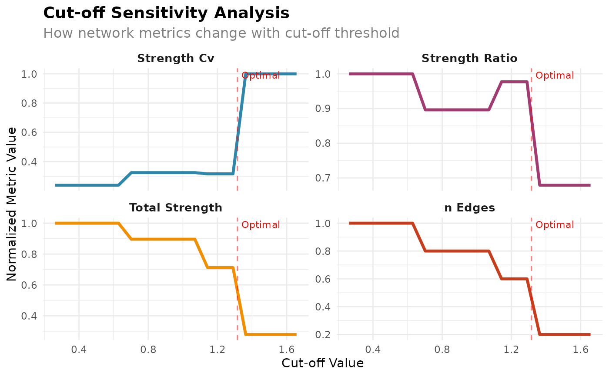

Creates a multi-panel plot showing how various metrics change with cut-off values.
Examples
# \donttest{
# Generate synthetic mobility data
data <- generate_mobility_data(n_classes = 4, seed = 123)
# Run sensitivity analysis
sensitivity <- cutoff_sensitivity_analysis(data, n_points = 20, verbose = FALSE)
# Find optimal cut-off
optimal <- find_optimal_cutoff(data, criterion = "elbow", verbose = FALSE)
# Plot sensitivity analysis with optimal point
if (require(ggplot2, quietly = TRUE) && require(tidyr, quietly = TRUE)) {
p <- plot_cutoff_analysis(sensitivity, optimal$optimal_cutoff)
print(p)
}

# }